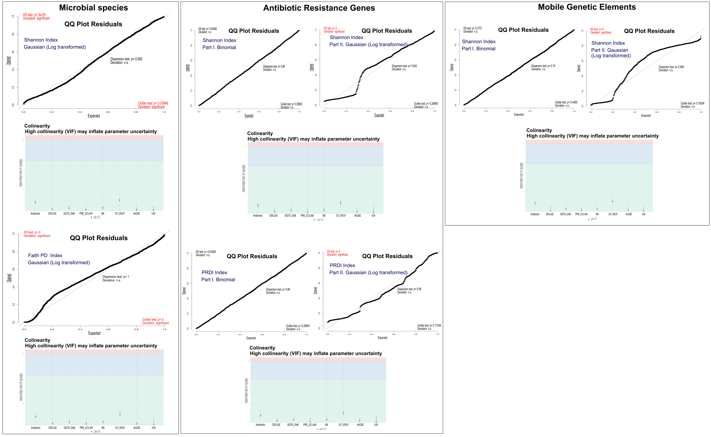

Significance codes:
*** p < 0.001, ** p < 0.01, * p < 0.05, . p < 0.1
Report 6
Report 8: Multivariate Log-transformed Gaussian mixed-effects models of species α-diversity across pregnancy outcome groups (A-D).
Model estimates
Family: gaussian
Formula: diversity_metric ~ pregnancy outcome group (A-D) + antibiotic treatment during pregnancy + maternal age + body mass index (BMI) + cervical cerclage + intrauterine growth restriction (IUGR) + gestational diabetes + hypertensive disorders of pregnancy + (1 | patient)
Data: Shannon by pregnancy outcome groups (A-D)
Number of observations: 1943; groups: PATIENT, 1533
Dispersion estimate for gaussian family (sigma^2): 0.136
| Variable | Estimate | Std. Error | z value | Pr(>|z|) |
|---|---|---|---|---|
| (Intercept) | 0.675190 | 0.094448 | 7.149 | 8.76e-13(***) |
| Group B | -0.048367 | 0.034064 | -1.420 | 0.155646 |
| Group C | -0.003915 | 0.030601 | -0.128 | 0.898197 |
| Group D | 0.131271 | 0.033168 | 3.958 | 7.56e-05(***) |
| Antibiotic (Yes) | 0.053282 | 0.025680 | 2.075 | 0.038000(*) |
| Maternal age | -0.002158 | 0.002276 | -0.948 | 0.343089 |
| BMI | 0.008488 | 0.002242 | 3.786 | 0.000153(***) |
| Cervical cerclage (Yes) | 0.158989 | 0.048500 | 3.278 | 0.001045(**) |
| IUGR (Yes) | -0.006759 | 0.047632 | -0.142 | 0.887162 |
| Gestational diabetes (Yes) | -0.003931 | 0.030063 | -0.131 | 0.895973 |
| Hypertensive disorders (Yes) | 0.034643 | 0.067685 | 0.512 | 0.608772 |
Confidence level: 0.95
Results are averaged over the levels of antibiotic treatment during pregnancy; maternal age; BMI; cervical cerclage; IUGR; gestational diabetes; hypertensive disorders.
p-value adjustment: Tukey method for comparing a family of 4 estimates
| contrast | estimate | SE | df | t.ratio | p.value |
|---|---|---|---|---|---|
| A vs B | 0.04836675 | 0.03406423 | 1930 | 1.420 | 0.4870 |
| A vs C | 0.00391503 | 0.03060054 | 1930 | 0.128 | 0.9993 |
| A vs D | -0.13127106 | 0.03316786 | 1930 | -3.958 | 0.0005 (***) |
| B vs C | -0.04445172 | 0.03570120 | 1930 | -1.245 | 0.5981 |
| B vs D | -0.17963781 | 0.03398566 | 1930 | -5.286 | <.0001 (***) |
| C vs D | -0.13518609 | 0.03444635 | 1930 | -3.925 | 0.0005 (***) |
Data: Phylogenetic Diversity (PD) by pregnancy outcome groups (A-D)
Family: gaussian
Number of observations: 1943; groups: PATIENT, 1533
Dispersion estimate for gaussian family (sigma^2): 0.178
| Variable | Estimate | Std. Error | z value | Pr(>|z|) |
|---|---|---|---|---|
| (Intercept) | 3.483004 | 0.102402 | 34.01 | < 2e-16 (***) |
| Group B | 0.087636 | 0.037105 | 2.36 | 0.018185 (*) |
| Group C | 0.134720 | 0.033408 | 4.03 | 5.52e-05 (***) |
| Group D | 0.234469 | 0.036157 | 6.48 | 8.89e-11 (***) |
| Antibiotic (Yes) | -0.063485 | 0.027868 | -2.28 | 0.022723 (*) |
| Maternal age | -0.008379 | 0.002467 | -3.40 | 0.000682 (***) |
| BMI | 0.015266 | 0.002430 | 6.28 | 3.32e-10 (***) |
| Cervical cerclage (Yes) | 0.081353 | 0.052493 | 1.55 | 0.121193 |
| IUGR (Yes) | 0.021445 | 0.051594 | 0.42 | 0.677659 |
| Gestational diabetes (Yes) | 0.005456 | 0.032629 | 0.17 | 0.867201 |
| Hypertensive disorders (Yes) | 0.120878 | 0.073219 | 1.65 | 0.098756 |
Confidence level: 0.95
p-value adjustment: Tukey method for comparing a family of 4 estimates.
| contrast | estimate | SE | df | t.ratio | p.value |
|---|---|---|---|---|---|
| A vs B | -0.08763583 | 0.03710515 | 1930 | -2.362 | 0.0849 (.) |
| A vs C | -0.13472018 | 0.03340774 | 1930 | -4.033 | 0.0003 (***) |
| A vs D | -0.23446873 | 0.03615738 | 1930 | -6.485 | <.0001 (***) |
| B vs C | -0.04708435 | 0.03881563 | 1930 | -1.213 | 0.6186 |
| B vs D | -0.14683290 | 0.03696010 | 1930 | -3.973 | 0.0004 (***) |
| C vs D | -0.09974855 | 0.03731957 | 1930 | -2.673 |
|
Report 7
Report 9: Multivariate Hurdle mixed-effects models (binomial and log-transformed Gaussian) assessing ARG and MGE detection and diversity across pregnancy outcome groups (A-D).
Model estimates
Formula: diversity_metric ~ outcome_group + antibiotic treatment + maternal age + body mass index (BMI) + cervical cerclage + intrauterine growth restriction (IUGR) + gestational diabetes + hypertensive disorders of pregnancy + (1 | patient)
Antibiotic Resistance Genes (ARG)
Data: Shannon by pregnancy outcome groups (A-D)
Part I. Family: binomial
Number of observations: 1943, groups: PATIENT, 1533
| Variable | Estimate | Std. Error | z value | p-value |
|---|---|---|---|---|
| Intercept | -0.348 | 0.483 | -0.72 | 0.471 |
| Group B vs A | -0.015 | 0.174 | -0.08 | 0.933 |
| Group C vs A | 0.483 | 0.157 | 3.07 | 0.002 (**) |
| Group D vs A | 0.034 | 0.168 | 0.20 | 0.838 |
| Antibiotic (Yes) | 0.239 | 0.132 | 1.81 | 0.070 (.) |
| Maternal age | -0.035 | 0.012 | -2.97 | 0.003 (**) |
| BMI | 0.061 | 0.012 | 5.04 | < 1e-6 (***) |
| Cervical cerclage (Yes) | 0.713 | 0.264 | 2.70 | 0.007 (**) |
| IUGR (Yes) | -0.024 | 0.244 | -0.10 | 0.923 |
| Gestational diabetes (Yes) | 0.139 | 0.154 | 0.91 | 0.364 |
| Hypertensive disorders (Yes) | 0.469 | 0.359 | 1.31 | 0.191 |
Estimated marginal probability on the response scale
Results are averaged over the levels of antibiotic treatment during pregnancy; maternal age; BMI; cervical cerclage; IUGR; gestational diabetes; hypertensive disorders.
Confidence level: 0.95
| OUT_GROUP | Probability | SE | 95% CI (Lower) | 95% CI (Upper) |
|---|---|---|---|---|
| A | 0.684 | 0.058 | 0.561 | 0.785 |
| B | 0.681 | 0.062 | 0.550 | 0.788 |
| C | 0.778 | 0.045 | 0.677 | 0.854 |
| D | 0.691 | 0.057 | 0.571 | 0.790 |
Pairwise comparisons were adjusted using Tukey’s method
Confidence level: 0.95
| Contrast (OUT_GROUP) | Odds ratio | SE | z value | p-value |
|---|---|---|---|---|
| A vs B | 1.015 | 0.176 | 0.08 | 0.9998 |
| A vs C | 0.617 | 0.097 | -3.07 | 0.0116 (*) |
| A vs D | 0.966 | 0.163 | -0.20 | 0.9970 |
| B vs C | 0.608 | 0.112 | -2.69 | 0.0357 (*) |
| B vs D | 0.952 | 0.165 | -0.28 | 0.9921 |
| C vs D | 1.566 | 0.278 | 2.52 | 0.0564 |
Part II. Family: gaussian
Conditional model:
Number of observations: 1088, groups: PATIENT, 919
Dispersion estimate for gaussian family (sigma^2): 0.117
| Variable | Estimate | Std. Error | z value | p-value |
|---|---|---|---|---|
| (Intercept) | 0.464 | 0.124 | 3.75 | 0.00018 (***) |
| Group B | 0.072 | 0.048 | 1.51 | 0.131 |
| Group C | 0.103 | 0.041 | 2.50 | 0.012 (*) |
| Group D | 0.096 | 0.046 | 2.09 | 0.037 (*) |
| Antibiotic (Yes) | 0.054 | 0.035 | 1.56 | 0.119 |
| Maternal age | 0.00006 | 0.003 | 0.02 | 0.985 |
| BMI | 0.0035 | 0.0029 | 1.21 | 0.225 |
| Cervical cerclage (Yes) | -0.009 | 0.059 | -0.15 | 0.879 |
| IUGR (Yes) | 0.074 | 0.064 | 1.16 | 0.246 |
| Gestational diabetes (Yes) | -0.025 | 0.040 | -0.63 | 0.532 |
| Hypertensive disorders (Yes) | 0.024 | 0.083 | 0.29 | 0.775 |
Confidence level: 0.95
Pairwise comparisons were adjusted using Tukey’s method:
| Contrast | Estimate | SE | t value | p-value |
|---|---|---|---|---|
| A vs B | -0.072 | 0.048 | -1.51 | 0.432 |
| A vs C | -0.103 | 0.041 | -2.50 | 0.061 (.) |
| A vs D | -0.096 | 0.046 | -2.09 | 0.158 |
| B vs C | -0.031 | 0.048 | -0.66 | 0.914 |
| B vs D | -0.024 | 0.047 | -0.51 | 0.956 |
| C vs D | 0.007 | 0.045 | 0.16 | 0.998 |
Data: Phenotypic Resistance Diversity Index (PRDI) by pregnancy outcome groups (A-D)
Part I. Family: binomial
Number of observations: 1943, groups: PATIENT, 1533
Dispersion estimate for gaussian family (sigma^2): 0.167
| Variable | Estimate | Std. Error | z value | p-value |
|---|---|---|---|---|
| Intercept | -0.348 | 0.483 | -0.72 | 0.471 |
| Group B | -0.015 | 0.174 | -0.08 | 0.933 |
| Group C | 0.483 | 0.157 | 3.07 | 0.002 (**) |
| Group D | 0.034 | 0.168 | 0.20 | 0.838 |
| Antibiotic (Yes) | 0.239 | 0.132 | 1.81 | 0.070 (.) |
| Maternal age | -0.035 | 0.012 | -2.97 | 0.003 (**) |
| BMI | 0.061 | 0.012 | 5.04 | < 1e-6 (***) |
| Cervical cerclage (Yes) | 0.713 | 0.264 | 2.70 | 0.007 (**) |
| IUGR (Yes) | -0.024 | 0.244 | -0.10 | 0.923 |
| Gestational diabetes (Yes) | 0.139 | 0.154 | 0.91 | 0.364 |
| Hypertensive disorders (Yes) | 0.469 | 0.359 | 1.31 | 0.191 |
Confidence level: 0.95
Results are averaged over the levels of antibiotic treatment during pregnancy; maternal age; BMI; cervical cerclage; IUGR; gestational diabetes; hypertensive disorders.
Pairwise comparisons were adjusted using Tukey’s method:
| Contrast (OUT_GROUP) | Odds ratio | SE | z value | p-value |
|---|---|---|---|---|
| A vs B | 1.015 | 0.176 | 0.08 | 0.9998 |
| A vs C | 0.617 | 0.097 | -3.07 | 0.0116 (*) |
| A vs D | 0.966 | 0.163 | -0.20 | 0.9970 |
| B vs C | 0.608 | 0.112 | -2.69 | 0.0357 (*) |
| B vs D | 0.952 | 0.165 | -0.28 | 0.9921 |
| C vs D | 1.566 | 0.278 | 2.52 | 0.0564 |
Part II. Family: gaussian
Conditional model:
Number of observations: 1088, groups: PATIENT, 919
| Variable | Estimate | Std. Error | z value | Pr(>|z|) |
|---|---|---|---|---|
| (Intercept) | 1.0619720 | 0.1300571 | 8.165 | 3.2e-16 (***) |
| Group B | 0.1157758 | 0.0501680 | 2.308 | 0.021012 (*) |
| Group C | 0.1595884 | 0.0432822 | 3.687 | 0.000227 (***) |
| Group D | 0.1388234 | 0.0482995 | 2.874 | 0.004050 (**) |
| Antibiotic (Yes) | 0.0400751 | 0.0364133 | 1.101 | 0.271087 |
| Maternal age | -0.0007221 | 0.0031796 | -0.227 | 0.820339 |
| BMI | 0.0035036 | 0.0030298 | 1.156 | 0.247530 |
| Cervical cerclage (Yes) | -0.0244801 | 0.0615801 | -0.398 | 0.690975 |
| IUGR (Yes) | 0.0480600 | 0.0669054 | 0.718 | 0.472556 |
| Gestational diabetes (Yes) | -0.0215854 | 0.0422513 | -0.511 | 0.609434 |
| Hypertensive disorders (Yes) | 0.0444680 | 0.0868610 | 0.512 | 0.608690 |
Confidence level: 0.95
Results are averaged over the levels of antibiotic treatment during pregnancy; maternal age; BMI; cervical cerclage; IUGR; gestational diabetes; hypertensive disorders.
Pairwise comparisons were adjusted using Tukey’s method:
| Contrast | Estimate | SE | t value | p-value |
|---|---|---|---|---|
| A vs B | -0.116 | 0.050 | -2.31 | 0.0969 (.) |
| A vs C | -0.160 | 0.043 | -3.69 | 0.0014 (**) |
| A vs D | -0.139 | 0.048 | -2.87 | 0.0215 (*) |
| B vs C | -0.044 | 0.050 | -0.87 | 0.8211 |
| B vs D | -0.023 | 0.049 | -0.47 | 0.9664 |
| C vs D | 0.021 | 0.048 | 0.44 | 0.9720 |
Mobile Genetic Element (MGE)
Data: Shannon by pregnancy outcome groups (A-D)
Part I. Family: binomial
Number of observations: 1943, groups: PATIENT, 1533
| Variable | Estimate | Std. Error | z value | p-value |
|---|---|---|---|---|
| Intercept | -0.906 | 0.504 | -1.80 | 0.072 (.) |
| Group B | -0.186 | 0.180 | -1.04 | 0.300 |
| Group C | 0.390 | 0.163 | 2.40 | 0.016 |
| Group D | 0.281 | 0.176 | 1.59 | 0.111 (*) |
| Antibiotic (Yes) | 0.226 | 0.137 | 1.65 | 0.099 |
| Maternal age | -0.014 | 0.012 | -1.18 | 0.239 |
| BMI | 0.063 | 0.013 | 5.04 | < 1e-6 (***) |
| Cervical cerclage (Yes) | 0.837 | 0.283 | 2.96 | 0.003 (**) |
| IUGR (Yes) | -0.031 | 0.254 | -0.12 | 0.904 |
| Gestational diabetes (Yes) | -0.167 | 0.159 | -1.05 | 0.293 |
| Hypertensive disorders (Yes) | 0.144 | 0.363 | 0.40 | 0.692 |
Estimated marginal probability on the response scale
Confidence level: 0.95
| OUT_GROUP | Probability | SE | Lower 95% CI | Upper 95% CI |
|---|---|---|---|---|
| A | 0.663 | 0.062 | 0.534 | 0.772 |
| B | 0.620 | 0.068 | 0.480 | 0.743 |
| C | 0.744 | 0.051 | 0.632 | 0.831 |
| D | 0.723 | 0.056 | 0.602 | 0.818 |
Confidence level: 0.95
Results are averaged over the levels of antibiotic treatment during pregnancy; maternal age; BMI; cervical cerclage; IUGR; gestational diabetes; hypertensive disorders.
Pairwise comparisons were adjusted using Tukey’s method:
| Contrast (OUT_GROUP) | Odds ratio | SE | z value | p-value |
|---|---|---|---|---|
| A vs B | 1.205 | 0.217 | 1.04 | 0.7285 |
| A vs C | 0.677 | 0.110 | -2.40 | 0.0771 (.) |
| A vs D | 0.755 | 0.133 | -1.59 | 0.3819 |
| B vs C | 0.562 | 0.108 | -3.00 | 0.0143 (*) |
| B vs D | 0.627 | 0.114 | -2.57 | 0.0505 (.) |
| C vs D | 1.115 | 0.205 | 0.59 | 0.9342 |
Part II. Family: gaussian
Conditional model:
Number of observations: 1123, groups: PATIENT, 949
Dispersion estimate for gaussian family (sigma^2): 0.165
| Variable | Estimate | Std. Error | z value | p-value |
|---|---|---|---|---|
| Intercept | 1.033 | 0.157 | 6.60 | < 1e-10 (***) |
| Group B | 0.027 | 0.060 | 0.44 | 0.661 |
| Group C | 0.109 | 0.052 | 2.10 | 0.036 (*) |
| Group D | -0.095 | 0.057 | -1.67 | 0.096 (.) |
| Antibiotic (Yes) | 0.048 | 0.044 | 1.09 | 0.274 |
| Maternal age | -0.008 | 0.004 | -2.17 | 0.030 (*) |
| BMI | 0.010 | 0.004 | 2.66 | 0.0078 (**) |
| Cervical cerclage (Yes) | -0.074 | 0.074 | -1.00 | 0.316 |
| IUGR (Yes) | -0.017 | 0.078 | -0.22 | 0.823 |
| Gestational diabetes (Yes) | 0.040 | 0.052 | 0.78 | 0.434 |
| Hypertensive disorders (Yes) | 0.270 | 0.109 | 2.48 | 0.013 (*) |
Confidence level: 0.95
Results are averaged over the levels of antibiotic treatment during pregnancy; maternal age; BMI; cervical cerclage; IUGR; gestational diabetes; hypertensive disorders.
Pairwise comparisons were adjusted using Tukey’s method:
| Contrast | Estimate | SE | t value | p-value |
|---|---|---|---|---|
| A vs B | -0.027 | 0.060 | -0.44 | 0.972 |
| A vs C | -0.109 | 0.052 | -2.10 | 0.155 |
| A vs D | 0.095 | 0.057 | 1.67 | 0.342 |
| B vs C | -0.083 | 0.061 | -1.36 | 0.528 |
| B vs D | 0.122 | 0.059 | 2.07 | 0.163 |
| C vs D | 0.204 | 0.056 | 3.63 |
|
GLMMs Diagnostics
Model Diagnostic
